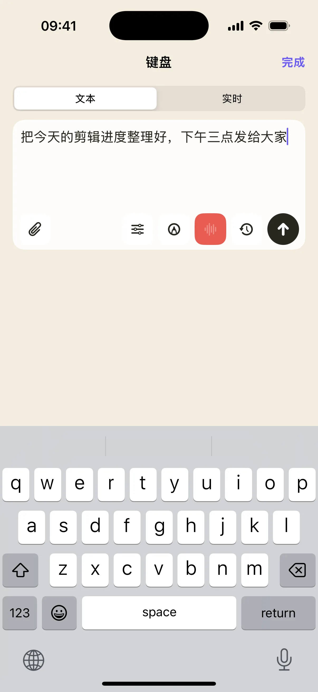

在 Mac 上看长文或查资料时，最常重复的是输入关键词、切换标签、前进后退和滚动页面。奶猫妙控的浏览器布局把这些操作放在一页，并保留电脑画面与触控板，让你能看到当前页面再继续操作。
从手机输入网址或搜索词
进入布局会启动 Mac 的默认浏览器。点击「输入网址或搜索」，在手机上打字或用系统语音输入，确认后由应用聚焦浏览器地址栏并提交。这个入口会记住自己的输入用途，避免把地址误当作正文直接送入页面。
标签页有独立的操作位置
标签页控件用来前后切换，点按刷新，长按关闭当前标签。新建标签、恢复标签、复制网址和页内搜索各有按钮。需要精确点网页上的链接时，再使用触控板；阅读正文则交给旁边的滚轮。

把网页内容带到下一步
复制网址可以为后续笔记保留来源。遇到需要仔细读的长文，可以切到阅读布局，使用章节目录与翻页；需要整理资料时转到科研布局，将选文按观点、方法、证据或疑问保存到剪藏夹。
不同浏览器的快捷键会有差异
地址栏、标签切换等动作依据浏览器的可用操作处理；部分按钮仍是固定快捷键。自定义键位、浏览器扩展和页面输入框可能改变响应。先在常用浏览器验证一次，必要时在布局编辑器调整绑定。
开始使用
- 连接 Mac，选择「浏览器」。
- 在手机输入一个搜索词并提交。
- 用标签控件和滚轮浏览，再试复制网址或恢复标签。
常见问题
打开的是哪款浏览器？
启动入口使用 Mac 设置的默认浏览器。
手机会保存完整网页吗？
浏览器布局用于控制 Mac；需要保留选文和出处时，可使用科研布局或剪藏夹。
本文对应 1.2.0。查看更新说明，或加入 iPhone / iPad TestFlight。